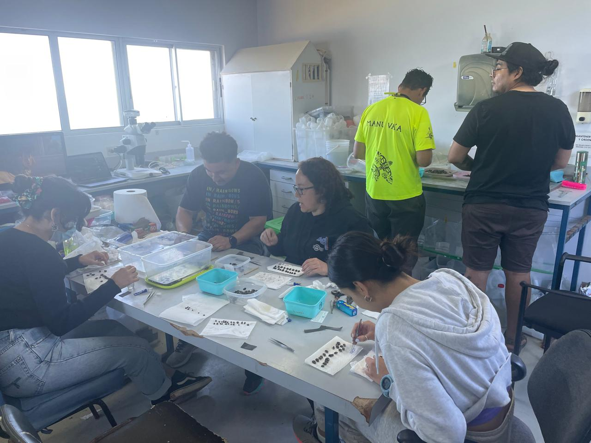
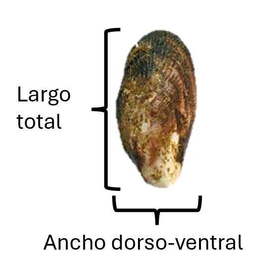
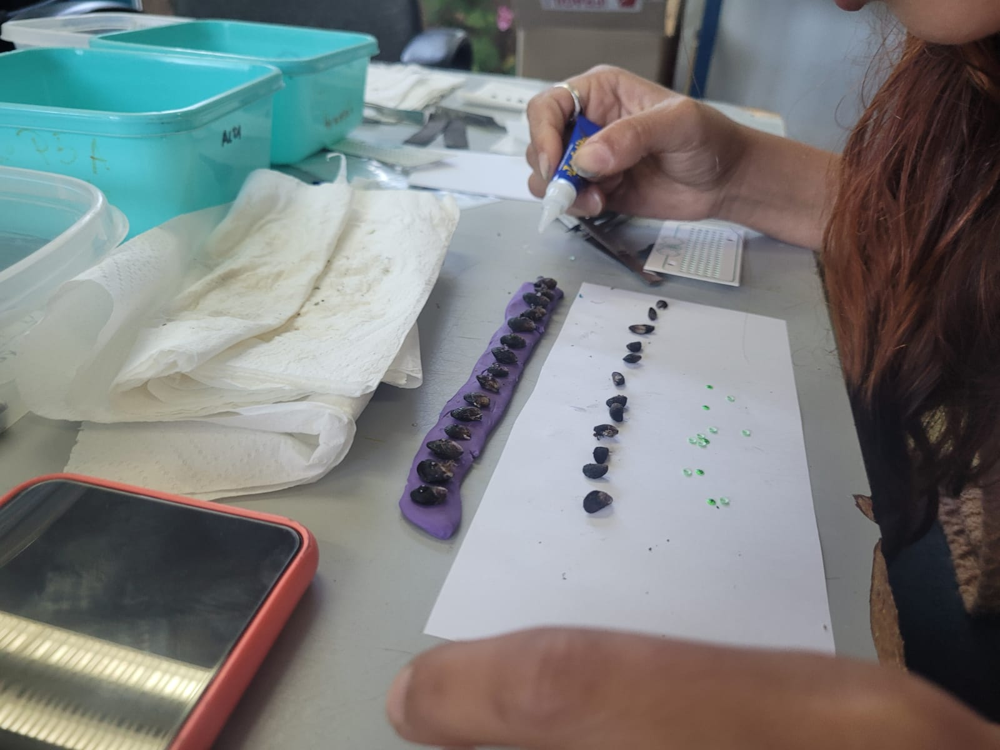
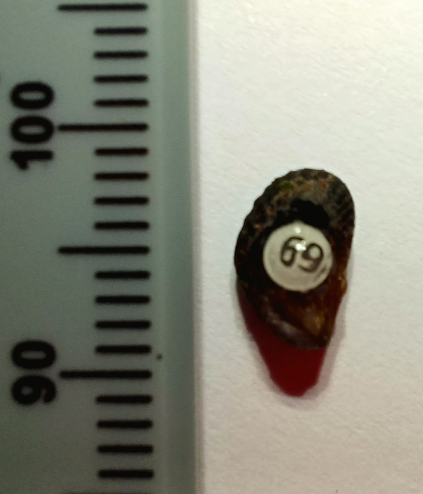
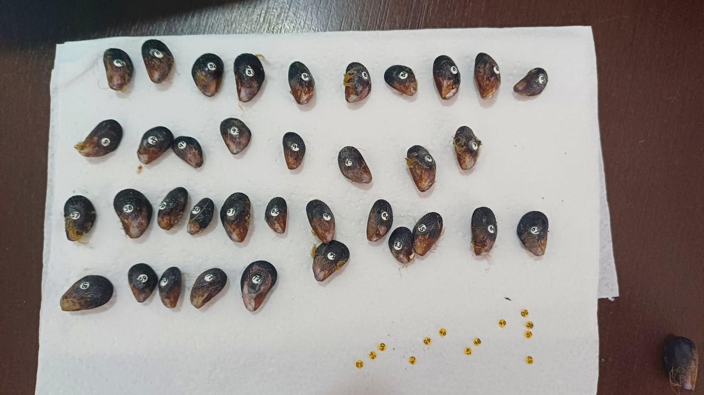
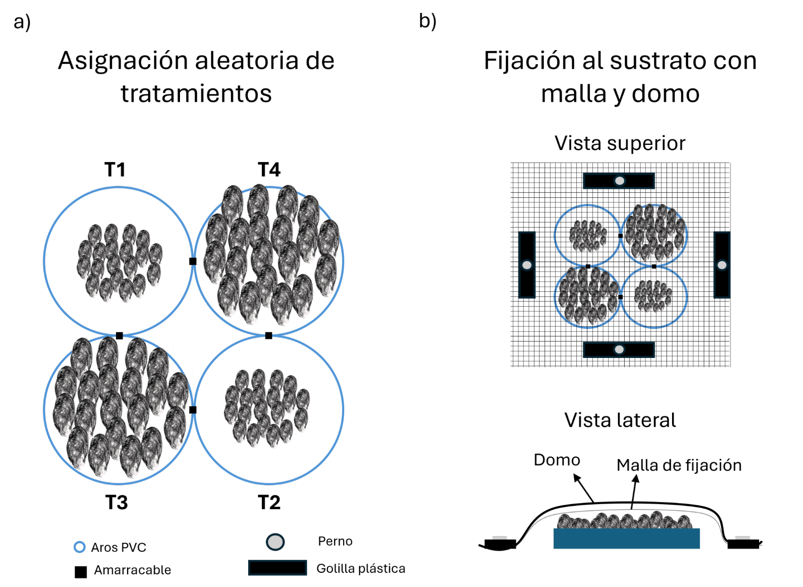
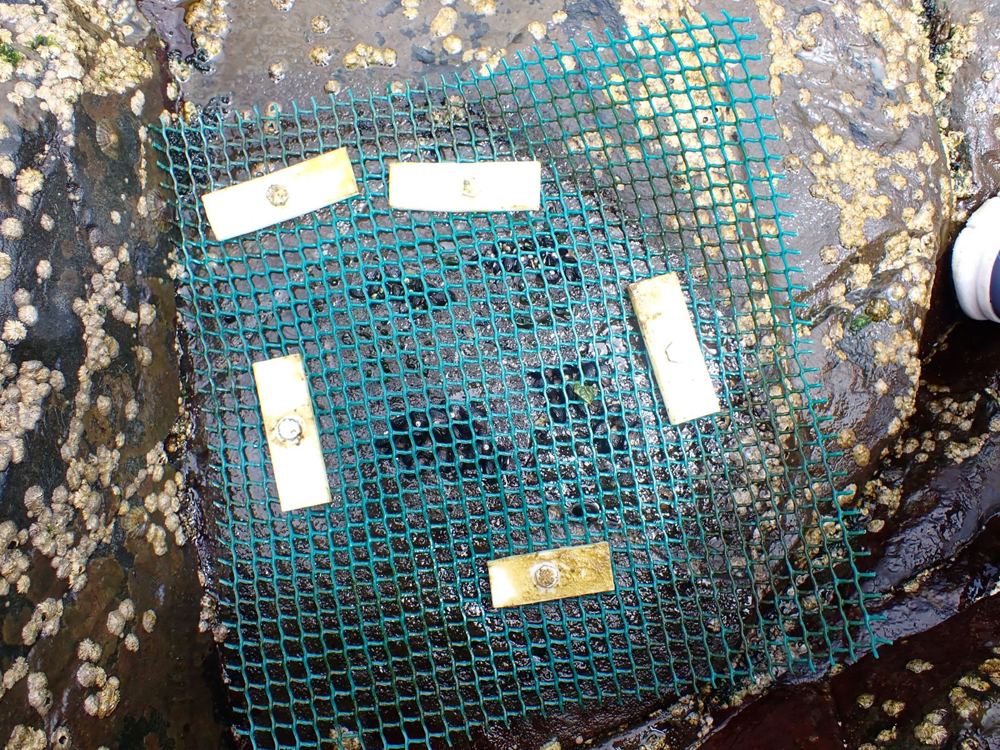
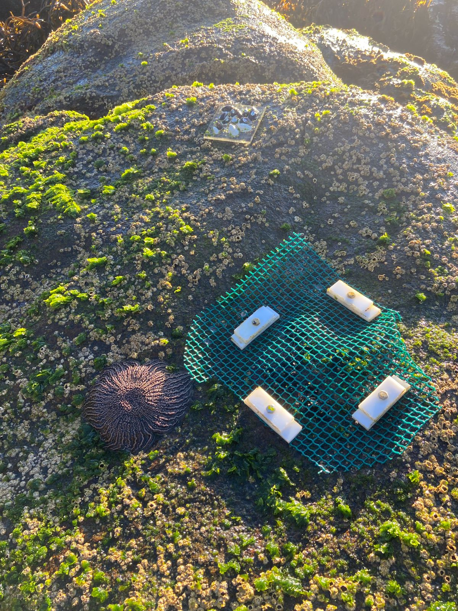
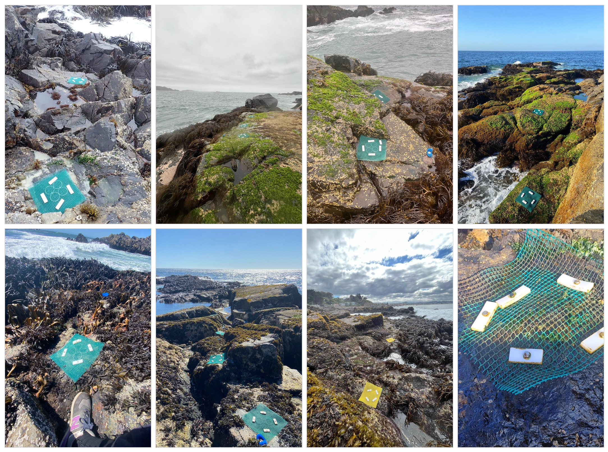

Protocolo
Esta sección describe el diseño experimental utilizado para cuantificar las tasas de crecimiento de Perumytilus purpuratus en distintos sitios de la costa de Chile, considerando variación espacial, temporal y entre clases de tamaño inicial.
Diseño general
Para cuantificar las tasas de crecimiento del mitílido P. purpuratus, se realizaron trasplantes de individuos pertenecientes a dos clases de tamaño inicial y dos temporalidades de exposición.
Las clases de tamaño utilizadas fueron:
- Chicos: 5–10 mm
- Grandes: 10.1–15 mm
Estas clases fueron definidas para mantener comparabilidad biológica con experimentos previos de crecimiento realizados entre 1997 y 2003, aunque parte del rango histórico incluyó individuos de tallas mayores en algunos periodos.
Diseño estadístico
Se implementó un diseño factorial con:
- Clase de tamaño (factor fijo, 2 niveles)
- Chicos
- Grandes
- Temporalidad (factor fijo, 2 niveles)
- Anual (~400 días)
- Estacional (~100 días por periodo)
- Sitio (factor aleatorio)
Cada combinación fue replicada en 5 plots por sitio.
Sitios de estudio
Zona norte (<32°S)
- Temblador
- Guanaqueros
- Punta de Talca
Zona centro (>32°S)
- Los Molles
- Montemar
- Curaumilla
- Quintay
- El Quisco
- Las Cruces
- Matanzas
- Pichilemu
Procedimiento de marcaje
Los individuos utilizados en los trasplantes fueron recolectados desde dos sitios fuente, uno para cada región de estudio:
- Para la zona norte se utilizaron individuos provenientes de Los Molles
- Para la zona centro se utilizaron individuos provenientes de Las Cruces
Los individuos recolectados fueron limpiados de epibiontes, secados con toalla de papel, medidos, pesados y marcados individualmente con etiquetas tipo bee-tag.
Las mediciones iniciales registradas en cada individuo correspondieron a:
- longitud máxima (antero-posterior, mm)
- ancho máximo (dorso-ventral, mm)
- peso húmedo total (g)

Para las mediciones se utilizó:
- Caliper con precisión de 0.05 mm
- Balanza con precisión de 0.01 g
Las etiquetas fueron adheridas con adhesivo instantáneo en gel sobre una superficie previamente lijada, y luego impermeabilizadas con esmalte para uñas para minimizar el desprendimiento y la colonización por algas.


Posteriormente, antes de la instalación de los trasplantes, los individuos fueron mantenidos en contenedores plásticos con agua de mar, alga húmeda y aireación, hasta el momento de su instalación en terreno.

Instalación de los trasplantes
En cada sitio, los individuos fueron asignados a 5 plots previamente limpiados de algas y epibiontes mediante raspado con espátulas y cepillos de acero.
Dentro de cada plot se instalaron 4 subdivisiones construidas con aros de PVC (diámetro 80 mm, altura 6 mm), unidos mediante amarracables y provistos de una malla y manguera plástica para impedir la salida de los individuos.
A cada subdivisión se le asignó aleatoriamente uno de cuatro tratamientos:
- T1 = chico–anual
- T2 = chico–estacional
- T3 = grande–anual
- T4 = grande–estacional
La figura siguiente resume el esquema experimental.

(a) Asignación aleatoria de tratamientos.
(b) Fijación al sustrato con malla y domo.
Una vez instalados los individuos, cada plot fue cubierto con una malla plástica flexible de luz pequeña (1 × 1 mm), diseñada para permitir la re-adhesión de los individuos al sustrato. Esta malla fue posteriormente cubierta con un domo de malla vexar de 10 × 10 mm para reducir la depredación durante el periodo de exposición.
Entre 15 y 30 días después de la instalación, la malla interior de sujeción fue retirada, verificando previamente que los individuos hubieran quedado adheridos al sustrato. El domo protector externo se mantuvo durante todo el experimento.
Registro fotográfico del experimento
Instalación general


Vista del plot instalado

Detalle interno de los experimentos (sitio Los Molles).



Resumen
El experimento fue diseñado para evaluar la variación en el crecimiento individual de P. purpuratus en función de la clase de tamaño inicial, la temporalidad de exposición y el sitio. La combinación de un diseño replicado en múltiples localidades y un sistema de marcaje individual permite reconstruir el crecimiento de cada individuo y analizarlo posteriormente con trazabilidad completa.
Instalación experimental en múltiples sitios. Ejemplos de plots del intermareal utilizados en el experimento de trasplante de P. purpuratus a lo largo del gradiente de estudio. Las fotografías el esfuerzo de instalación en distintos sitios del intermareal rocoso de Chile.
